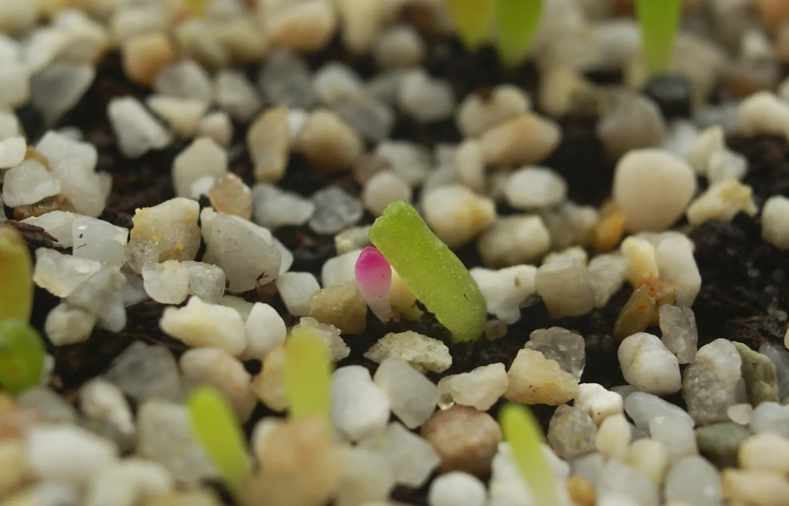

Explainers
The reasoning behind the planner, written out: what it refuses to tell you and why, which geographic number does which job, and where the data model came from.

- Why this planner will never give you a companion-planting chart The grid of good and bad neighbors is the most-copied thing in garden writing, and one of the least examined. Here's what happens when you check it.
- Why your hardiness zone won't give you a frost date Zone, frost dates and latitude are three different numbers that answer three different questions. Nearly every garden tool uses the first one for all three.
- Rotation belongs to the ground Most garden apps pin crop history to a bed, so when you move the beds it's gone. Here's why this one attaches history to the soil, and what that gets you.
- What a milpa is, and why Three Sisters is only part of it The best-known polyculture in North American gardening is really the northern tip of a much older field system, and the difference comes down to scale.
- How Milpa is built, from its evidence files to the app Every answer Milpa gives traces back to a graded, sourced rule in a set of plain-text files. The app is a thin layer on top of that record.
- What pollination needs, and what no one can tell you Some crops set fruit alone; some need an insect to carry the pollen. That difference decides what a bad year means, and there's one part no app can claim to know.
- Sow by the soil, not the calendar Seeds germinate from the soil's warmth. Here's why cold ground rots warm-season seed, why cool-season crops want the opposite, and how to tell the ground is ready.
- What a garden planner usually is, and what this one is instead The category is a solved product with a dozen good versions. This one is built on the opposite premise, and that isn't a feature you could bolt onto the others.
- What cold stratification does Some seed will not germinate until it has been through a cold, damp spell first. Here is the dormancy that causes it, why a winter breaks it, and how to give a seed that winter on purpose.